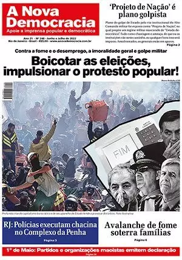
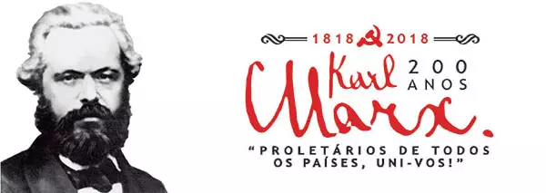
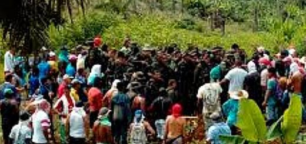
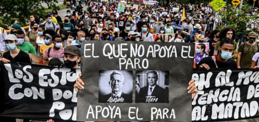
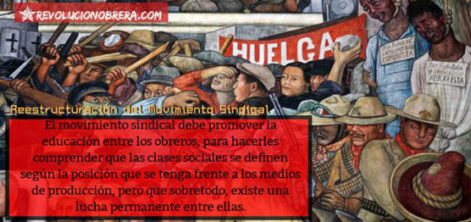
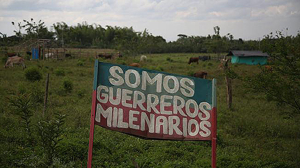
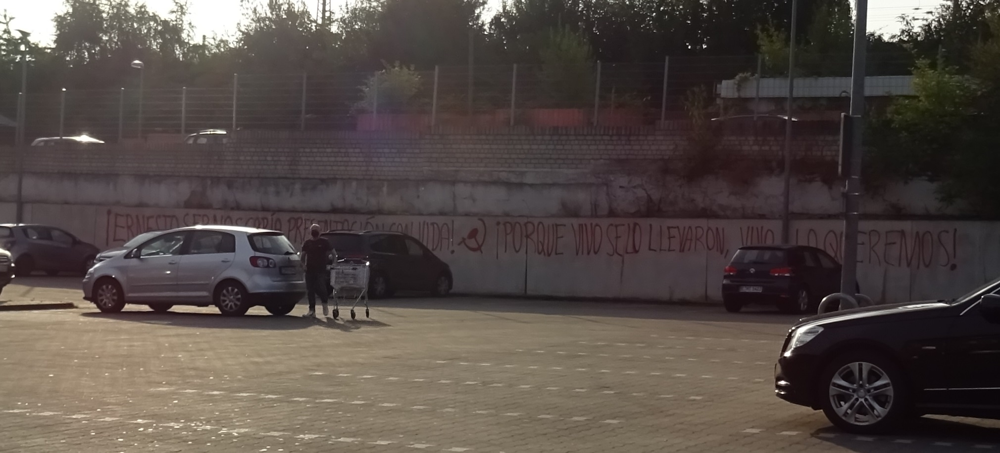
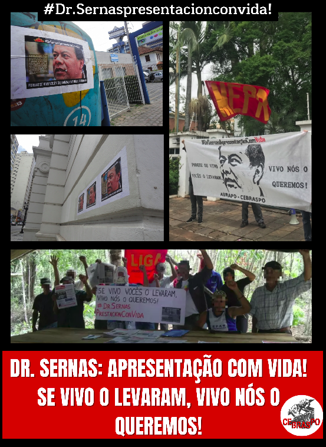
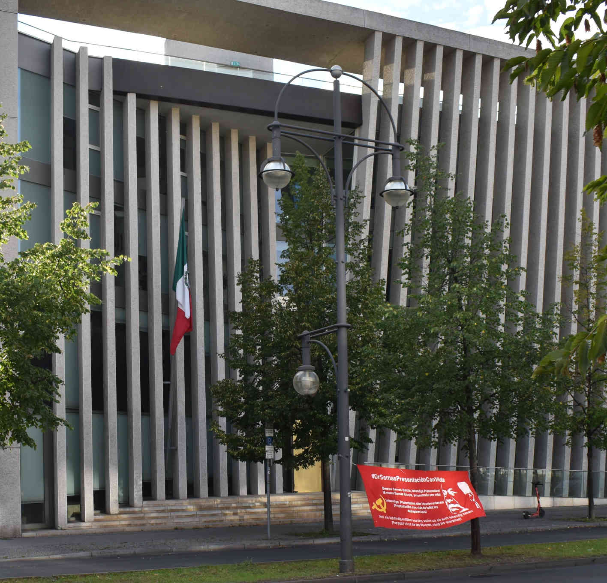
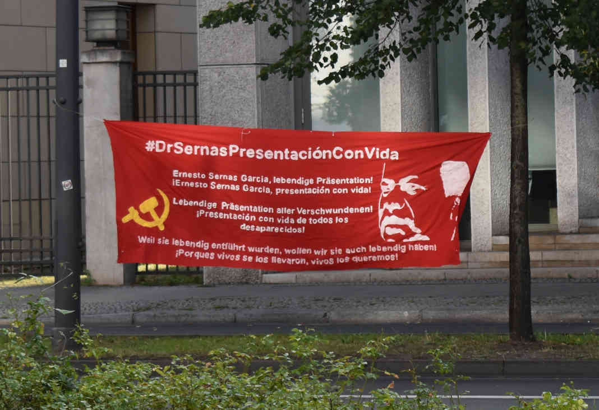

(因为一些原因，国际新闻简报先只能发表于此)
【乌克兰民族解放战争进展】
乌总参谋部称消灭俄帝侵略军约450名士兵、23辆坦克、33辆装甲车、3辆军车/油罐车、1台特种设备、24套火炮系统、2套多管火箭炮系统、1套防空系统、架飞机、1架直升机、2架无人机。
俄帝国防部称消灭乌军71辆坦克和装甲车、37辆军车、3门野战炮和迫击炮、8架无人机。
国际原子能机构代表团抵达扎波罗热核电站，该机构发言人称代表团被乌军推迟前进3小时。
俄帝官媒称国际原子能机构总干事离开扎波罗热核电站。
芬兰帝国主义国防部称该国总统决定向乌克兰提供国防“援助”。
【战场外的帝国主义博弈】
芬兰帝国主义减少发给俄罗斯公民签证的数量至以往的十分之一。
俄帝外交部长警告摩尔多瓦袭击俄帝“维和部队”将被视为对俄帝的攻击。
[德国飞行师大罢工]
[挪威数千教师罢工]
[德帝国防军总监察长称要参加明年澳帝的军演并派遣更多军舰到印太地区]
[台军称击落中修无人机]
[斯里兰卡反动卖国政府和国际货币基金组织达成29亿美元的贷款协议]
[土耳其锡瓦斯发生交通事故，8死9伤]
法西斯統治侵犯了我們的權利，司法被剝奪了無條件釋放政治犯CPI（毛主義）
2022-08-31T03:22:00-07:00
作者::
馬伊斯特羅德 (maoistroad)
2022年8月31日星期三法西斯統治侵犯了我們的權利，司法被剝奪了無條件釋放政治犯CPI（毛主義）國際行動周9月13/19日ICSPWI
烈士賈丁·達斯同志站在反對英帝國主義的最前線
以勇氣、犧牲和耐心的精神。他在長達63天的絕食抗議中犧牲了自己的生命
與Com。Bhagat Singh、Sukhdev和Rajguru。
3月18日是國際政治犯日。與此保持一致
傳統，我們的黨，我們的中央區域局CRB向所有勇敢和革命者致敬
在獄中的鬥爭中犧牲了生命的同志們。我們決心發揚他們的
努力實現他們的夢想。
我國的法西斯統治正在剝奪人民的公民自由。Trans
CE：支持委員會將在塞阿拉聯邦大學（UFC）舉行電影辯論
 
2022-08-31T05:36:07-03:00
作者::
支持委員會-福塔萊薩（歐共體） (COMITÊ DE APOIO - FORTALEZA (CE))
[‘https://anovademocracia.com.br/images/logo/logo2.webp’, ‘https://anovademocracia.com.br/images/248/capap.webp’, ‘https://anovademocracia.com.br/images/247/capap.webp’, ‘https://anovademocracia.com.br/246/capaP.webp’, ‘https://anovademocracia.com.br/245/capaP.webp’, ‘https://anovademocracia.com.br/244/capaP.webp’, ‘https://anovademocracia.com.br/243/capaP.webp’, ‘https://anovademocracia.com.br/images/Cine-Debate_-_Araguaia_Presente_-_png_1.webp’, ‘https://anovademocracia.com.br/images/Cine-Debate_-_Araguaia_Presente_-_png_2.webp’, ‘https://anovademocracia.com.br/images/thumbnails/lne/thumb_197_9554.webp’, ‘https://anovademocracia.com.br/images/thumbnails/lne/thumb_197_1024.webp’, ‘https://anovademocracia.com.br/images/thumbnails/lne/thumb_197_14468.webp’, ‘https://anovademocracia.com.br/images/thumbnails/lne/thumb_197_16724.webp’, ‘https://anovademocracia.com.br/images/thumbnails/lne/thumb_197_15209.webp’, ‘https://anovademocracia.com.br/images/thumbnails/lne/thumb_197_16374.webp’, ‘https://anovademocracia.com.br/images/thumbnails/lne/thumb_197_5842.webp’, ‘https://anovademocracia.com.br/images/thumbnails/lne/thumb_197_7828.webp’, ‘https://anovademocracia.com.br/images/thumbnails/lne/thumb_197_16670.webp’, ‘https://anovademocracia.com.br/images/thumbnails/lne/thumb_197_2366.webp’, ‘https://anovademocracia.com.br/images/thumbnails/lne/thumb_197_13524.webp’, ‘https://anovademocracia.com.br/images/thumbnails/lne/thumb_197_1195.webp’, ‘https://anovademocracia.com.br/images/thumbnails/lne/thumb_197_8917.webp’, ‘https://anovademocracia.com.br/images/thumbnails/lne/thumb_197_15521.webp’, ‘https://anovademocracia.com.br/images/thumbnails/lne/thumb_197_9528.webp’, ‘https://anovademocracia.com.br/images/thumbnails/lne/thumb_197_3950.webp’, ‘https://anovademocracia.com.br/images/thumbnails/lne/thumb_197_7012.webp’, ‘https://anovademocracia.com.br/images/thumbnails/lne/thumb_197_17054.webp’, ‘https://anovademocracia.com.br/images/thumbnails/lne/thumb_197_9398.webp’, ‘https://anovademocracia.com.br/images/thumbnails/lne/thumb_197_15195.webp’, ‘https://anovademocracia.com.br/images/promo_2019.webp’, ‘https://anovademocracia.com.br/images/araguaia-anuncio.webp’, ‘https://anovademocracia.com.br/images/00-oquefazer.webp’, ‘https://anovademocracia.com.br/images/248/capam.webp’, ‘https://anovademocracia.com.br/images/karl-marx-selo-3.webp’, ‘https://anovademocracia.com.br/images/onde_encontrar.webp’, ‘https://anovademocracia.com.br/artimania.png’]
{kind=link}
{kind=link}
{kind=link}
{kind=link}
{kind=link}
{kind=link}
{kind=link}
{kind=link}
{kind=link}
{kind=link}
{kind=link}
{kind=link}
{kind=link}
{kind=link}
{kind=link}
{kind=link}
{kind=link}
{kind=link}
{kind=link}
{kind=link}
{kind=link}
{kind=link}
{kind=link}
{kind=link}
{kind=link}
{kind=link}
{kind=link}
{kind=link}
{kind=link}
{kind=link}
{kind=link}
{kind=link}
{kind=link}
{kind=link}
{kind=link}
{kind=link}
福塔萊薩（CE）支持委員會將於9月5日在塞阿拉聯邦大學（UFC）舉行電影辯論“從印度的紅色走廊到巴西的阿拉瓜游擊隊”。紀錄片《阿拉瓜亞》將上映！然後就巴西的歷史和政治事件以及印度正在進行的革命進程進行了辯論。
福塔萊薩支持委員會邀請學生、教師、技術和行政人員瞭解和/或加深他們對巴西商業、民事和軍事政權（1964-1985年）最重要的政治事件之一的瞭解。
紀錄片放映後，將有一場關於阿拉瓜游擊隊的展覽和辯論，將其與印度正在進行的持久人民戰爭聯繫起來，以此紀念過去和現在的英勇戰士。
20年的和：Redação邀請參加偉大的政治文化活動；觀看視頻
2022-08-31T09:47:21-03:00
作者::
和寫作 (Redação de AND)
[‘https://anovademocracia.com.br/images/logo/logo2.webp’, ‘https://anovademocracia.com.br/images/248/capap.webp’, ‘https://anovademocracia.com.br/images/247/capap.webp’, ‘https://anovademocracia.com.br/246/capaP.webp’, ‘https://anovademocracia.com.br/245/capaP.webp’, ‘https://anovademocracia.com.br/244/capaP.webp’, ‘https://anovademocracia.com.br/243/capaP.webp’, ‘https://anovademocracia.com.br/images/YOUR_DESIGN.webp’, ‘https://anovademocracia.com.br/images/araguaia-anuncio.webp’, ‘https://anovademocracia.com.br/images/promo_2019.webp’, ‘https://anovademocracia.com.br/images/00-oquefazer.webp’, ‘https://anovademocracia.com.br/images/248/capam.webp’, ‘https://anovademocracia.com.br/images/karl-marx-selo-3.webp’, ‘https://anovademocracia.com.br/images/onde_encontrar.webp’, ‘https://anovademocracia.com.br/artimania.png’]
{kind=link}
《新民主報》今年慶祝其20週年。在一個日益敵視民主權利和人民利益的反動政權的不利條件下，在媒體的壟斷下，建立、鞏固和發展這一大眾和民主媒體的載體，已經進行了20年不間斷的鬥爭。這項艱鉅、艱苦甚至危險的任務是不可能不同的。這就是為什麼實現20年生存的成就如此重要，特別是在這個矇昧主義和反動主義的時代。因此，必須歡慶它！編輯委員會再次邀請其讀者、支持者和合作者：8月30日與我們一起慶祝。偉大的政治文化活動將在里約熱內盧舉行。觀看視頻。
2006年：特隆赫姆警察殺死了尤金·奧比奧拉
{kind=link}
{kind=link}
{kind=link}
2022-08-31T14:24:21+00:00
2022-08-31T14:24:33+00:00
[‘https://tjen-folket.no/wp-content/uploads/2020/06/Obiora-2.png’, ‘https://lh6.googleusercontent.com/IzJ4j0A9JkeWc2iTj0Eww0jioMXVC3OTGnzXAUAUgzwjg1z6bMF2g6iGkFPPGdMNV1pj2IreMZ3VU9iTkpXqybLWLeCmD3Ew4Q4V2WhKN59RQyriXKPBmd5CU8qCabhIuAUc_rTNOY4Dd3fzQaIzi1RYDrDPd6rmA426gUc7Qm1uSDhZtQBzZZ3EGw’, ‘https://lh5.googleusercontent.com/YNQRjin9f4okyb72EjBtWkBiUBXA62hNzoLHeoW3j189J2X0msrclu82ThQPeTGY_GV7Ril9-K3teFY6O-yFxwaAksFsYrabzrL0rMYVoCPzLbKSV0F3ZzH7IyL-ICm7n54B0cMKg4ZWi6AIsXy4J9o5xS0rReo1oy_6zmPjjDP84W8JHuwsC-2R2Q’, ‘https://lh6.googleusercontent.com/RSjTTOshjy1gSatRiFarL0nWXotCOp3tB51k6NbY2P6wrSYWMlWZ_Fp89YplblNy-3MUZ69jSAi1Hwc1X6G1_zA6TGxTnA3POkcwahlp3tVaGHkx1R9fCrPT64xonbW2zBKJkm_o4UO4MYeqv9Wz0bjW7Hd9H-dgJ_Ik_qBxRVLTCtgqs5KoaHRPtw’, ‘https://lh4.googleusercontent.com/7JWTh4lvrg0_1zkU7rNu4EcaFPHcSsIETN5sPYPvz0qkgIhDJ3g4PKRUeg_4nNE5DCBv4D3Ze7NwTD1jXPZeW0BqYOKf0g3BPDehNXCVKjzpuDlVnWXOOHzPDuPiQHwFKG2LSXhrypqQNE4twvB5r5q8nZZjw93QXNDAKhAUVlbtp_uDZ2T_oS0MKg’, ‘https://lh5.googleusercontent.com/_S_6n6Umc61mqYgBevzTzaDCofunCQo1QINBsZe15xoTyhsAKWwCwMUcRGBvU1DRcPAcVyfTqEOZwRGO6J4b90uyqai76rk6C6SujIo_hJCL-k4cfvbWYv832OVQvem0lz32xhNDjkQ_6ovs7PgyN_rDpPau4HW53bbxLHhJi9mQAmt6WtN4PbhJfA’]
{kind=link}
最後一個內德·斯克裡夫
從評論員到為人民媒體服務。
照片：2006年Krev尊重標誌
我們在這裡向新讀者重新發布一篇關於奧比奧拉的文章，他是誰，以及他是如何死的，如果這場犯罪只持續一週到16年的話。
2006年9月7日，Eugene Ejike Obiora在東城警署外被四名警官殺害，他們將他的生命推了出去。奧比奧拉被勒死，四個人都沒有受到懲罰。主要人物被提升了，現在他正在為特隆赫姆的警察做律師。
奧比奧拉前往服務辦公室投訴拒絕申請社會援助。奧比奧拉·哈德德·博德·諾熱一號20år，奧格·弗利特為奧塔·烏丹寧、før·漢·吉菲特和奧格·菲克·巴恩·赫爾擊中了尼日利亞聯邦鐵路局。拒絕社會援助後死亡
當辦公室的投票變成安瓿時，員工們打電話給現場有保安的稱重公司。你的體重當時很忙，公司也很忙
9月19日針對高功率壓力的示威
{kind=link}
2022-08-31T14:28:01+00:00
2022-08-31T14:28:20+00:00
[‘https://tjen-folket.no/wp-content/uploads/2022/08/standard_compressed_4076659909_95e5f0b894_b.jpg’]
{kind=link}
最後一個內德·斯克裡夫
從評論員到為人民媒體服務。
9月19日，在大議會前舉行了一場要求廉價電力的警告示威。這一天，電力流應該在大議會得到處理，大議會在兩週前“中斷了疫苗”來處理這一病例，儘管更有意義的反對者要求他們更早作出回應。
示威背後還有其他人。主要倡議是由Boye Ullmann領導的產業化。此外，該運動和facebook群組中還有其他人，“我們需要更多的權力。”這是斯堪的納維亞最大的facebook群組，擁有超過60萬註冊會員。
一些來自政黨、組織、營養生活和私人人員的人將呼籲Boye Ullmann加入Energinytt24，這是Facebook集團自己的網站。
自上次“是”的大規模示威以來，電力力量仍在增長。
反帝國主義組織的國際聲明
{kind=link}
2022-08-31T14:32:28+00:00
2022-08-31T14:32:53+00:00
[‘https://tjen-folket.no/wp-content/uploads/2022/08/antiimperialistisk-collage.png’]
{kind=link}
最後一個內德·斯克裡夫
來自人民媒體的版本。
我們懷著強烈的階級自豪感和無產階級的國際精神，在此發表今年8月20日在歐洲舉行的反帝國主義組織會議的聲明，有時還發表在《人民服務》的博客上。
該聲明由挪威紅色陣線簽署。其他八個反帝國主義組織迄今已簽署。
翻譯是無效的，是我們自己的，所有的錯誤和缺失都是我們的責任。2022年8月舉行的反帝國主義組織國際會議的聲明
我們，2022年8月舉行的反帝國主義組織國際會議的組織者和參與組織，僅就：
1） 繼續並加強我們的努力，創建一個令人興奮的世界反帝國主義組織，為此，我們正在做準備。
漢堡：“Ernesto Sernas García，presentación con vida！"
{kind=link}
{kind=link}
{kind=link}
{kind=link}
{kind=link}
2022-08-31T15:00:00+00:00
[‘https://www.demvolkedienen.org/images/HH/2022/sernas_garcia/Hamburg_-_Ernesto_Sernas_García_-_30_August_2022_-_2.png’, ‘https://www.demvolkedienen.org/images/HH/2022/sernas_garcia/Hamburg_-_Ernesto_Sernas_García_-_30_August_2022_-_5.JPG’, ‘https://www.demvolkedienen.org/images/HH/2022/sernas_garcia/Hamburg_-_Ernesto_Sernas_García_-_30_August_2022_-_4.png’, ‘https://www.demvolkedienen.org/images/HH/2022/sernas_garcia/Hamburg_-_Ernesto_Sernas_García_-_30_August_2022_-_1.JPG’, ‘https://www.demvolkedienen.org/images/HH/2022/sernas_garcia/Hamburg_-_Ernesto_Sernas_García_-_30_August_2022_-_6.png’]
{kind=link}
{kind=link}
{kind=link}
{kind=link}
{kind=link}
標籤::
[‘墨西哥 (Mexiko)’, ‘漢堡 (Hamburg)’, ‘埃內斯托·塞爾納斯·加西亞 (Ernesto Sernas García)’]
8月30日，漢堡反帝國主義侵略聯盟呼籲在墨西哥領事館前舉行集會，以支持在被捕失蹤者國際日開展的國際運動“Drsernaspressentación ConVida”。隨後，各種革命、反帝國主義和民主組織發出了呼籲。
因此，自2018年Sernas García博士失蹤以來，這場由流行的潮流——紅日和Sernas加西亞家族發起的運動被引導到了漢堡帝國的堡壘。墨西哥州銷售政府的領事館位於漢堡最富有的地區之一，位於萬奧斯維爾附近。那天，這個寄生蟲區的街道上回響著“Ernesto Sernas García，presentación con vida！“墨西哥革命萬歲
PE:Coletivo Mangue Vermelho拒絕UFPE選舉鬧劇候選人辯論
2022-08-31T15:40:39-03:00
作者::
支持委員會-累西腓（EP） (COMITÊ DE APOIO - RECIFE (PE))
[‘https://anovademocracia.com.br/images/logo/logo2.webp’, ‘https://anovademocracia.com.br/images/248/capap.webp’, ‘https://anovademocracia.com.br/images/247/capap.webp’, ‘https://anovademocracia.com.br/246/capaP.webp’, ‘https://anovademocracia.com.br/245/capaP.webp’, ‘https://anovademocracia.com.br/244/capaP.webp’, ‘https://anovademocracia.com.br/243/capaP.webp’, ‘https://anovademocracia.com.br/images/20220825_191905_1.webp’, ‘https://anovademocracia.com.br/images/thumbnails/lne/thumb_197_2908.webp’, ‘https://anovademocracia.com.br/images/thumbnails/lne/thumb_197_9597.webp’, ‘https://anovademocracia.com.br/images/thumbnails/lne/thumb_197_9663.webp’, ‘https://anovademocracia.com.br/images/thumbnails/lne/thumb_197_14183.webp’, ‘https://anovademocracia.com.br/images/thumbnails/lne/thumb_197_14729.webp’, ‘https://anovademocracia.com.br/images/thumbnails/lne/thumb_197_14682.webp’, ‘https://anovademocracia.com.br/images/thumbnails/lne/thumb_197_8361.webp’, ‘https://anovademocracia.com.br/images/thumbnails/lne/thumb_197_13061.webp’, ‘https://anovademocracia.com.br/images/thumbnails/lne/thumb_197_8102.webp’, ‘https://anovademocracia.com.br/images/thumbnails/lne/thumb_197_14765.webp’, ‘https://anovademocracia.com.br/images/thumbnails/lne/thumb_197_14707.webp’, ‘https://anovademocracia.com.br/images/thumbnails/lne/thumb_197_17955.webp’, ‘https://anovademocracia.com.br/images/thumbnails/lne/thumb_197_9715.webp’, ‘https://anovademocracia.com.br/images/thumbnails/lne/thumb_197_9455.webp’, ‘https://anovademocracia.com.br/images/thumbnails/lne/thumb_197_7216.webp’, ‘https://anovademocracia.com.br/images/thumbnails/lne/thumb_197_12957.webp’, ‘https://anovademocracia.com.br/images/thumbnails/lne/thumb_197_15841.webp’, ‘https://anovademocracia.com.br/images/thumbnails/lne/thumb_197_3397.webp’, ‘https://anovademocracia.com.br/images/thumbnails/lne/thumb_197_9736.webp’, ‘https://anovademocracia.com.br/images/thumbnails/lne/thumb_197_14199.webp’, ‘https://anovademocracia.com.br/images/promo_2019.webp’, ‘https://anovademocracia.com.br/images/araguaia-anuncio.webp’, ‘https://anovademocracia.com.br/images/00-oquefazer.webp’, ‘https://anovademocracia.com.br/images/248/capam.webp’, ‘https://anovademocracia.com.br/images/karl-marx-selo-3.webp’, ‘https://anovademocracia.com.br/images/onde_encontrar.webp’, ‘https://anovademocracia.com.br/artimania.png’]
{kind=link}
{kind=link}
{kind=link}
{kind=link}
{kind=link}
{kind=link}
{kind=link}
{kind=link}
{kind=link}
{kind=link}
{kind=link}
{kind=link}
{kind=link}
{kind=link}
{kind=link}
{kind=link}
{kind=link}
{kind=link}
{kind=link}
{kind=link}
{kind=link}
8月25日，Mangue Vermelho集體（MV）的活動人士發起了一場激烈的選舉抵制運動。活動在伯南布哥聯邦大學應用社會科學中心（CCSA）舉行，當時該機構正在籌備伯南布哥州州長候選人之間的辯論。
在網站入口處，活動人士豎起了一個大橫幅，表達活動內容：不要投票！為革命而戰！他們還分發了500本小冊子，上面寫著“選舉不！”！革命是的！揭露了民主的假象，它實際上是建立在工人的弊病之上，指出需要進行民主革命，作為解決我國人民長期懸而未決問題的唯一途徑。
一個走路的工人為他所看到的感到自豪，他緊緊地拿著小冊子，喊道：“是時候有人這麼說了！”
每週社論——選舉和悲情秀
2022-08-31T16:08:38-03:00
作者::
和寫作 (Redação de AND)
[‘https://anovademocracia.com.br/images/logo/logo2.webp’, ‘https://anovademocracia.com.br/images/248/capap.webp’, ‘https://anovademocracia.com.br/images/247/capap.webp’, ‘https://anovademocracia.com.br/246/capaP.webp’, ‘https://anovademocracia.com.br/245/capaP.webp’, ‘https://anovademocracia.com.br/244/capaP.webp’, ‘https://anovademocracia.com.br/243/capaP.webp’, ‘https://anovademocracia.com.br/images/21314124_1.webp’, ‘https://anovademocracia.com.br/images/araguaia-anuncio.webp’, ‘https://anovademocracia.com.br/images/promo_2019.webp’, ‘https://anovademocracia.com.br/images/00-oquefazer.webp’, ‘https://anovademocracia.com.br/images/248/capam.webp’, ‘https://anovademocracia.com.br/images/karl-marx-selo-3.webp’, ‘https://anovademocracia.com.br/images/onde_encontrar.webp’, ‘https://anovademocracia.com.br/artimania.png’]
{kind=link}
照片：和數據庫
在指控和打鬥之間，第一次總統辯論開始了，執政階級的主要候選人舉行了休假會議，以治理剝削和壓迫制度。全國人民用他們的嘴看到了一個真正的普雷塞帕達。
承諾沒有兌現。在彼此的激勵下，奇蹟的出現只是在辯論過程中才有所增加。直到昨天還稱福利計劃為“社會主義”的波索納羅，今天可能已經成為其最偉大的支持者，因為這是選舉年。謊言也讓人受夠了，到處都是。每個人都觀看了波索納羅和路易斯·伊納西奧互相指責用這些節目勒索人民以贏得選票的滑稽場面。智者說：候選人只有在互相指責時才會說實話。
此外，還舉行了“封殺”抗生素的著名參議員大本營皇后的遊行。
https://anovademocracia.com.br/noticias/18048-editorial-semanal-espetaculo-eleitoreiro-e-patetico
8月30日：不來梅的Drsernas Presentación Vida和護理人員的焦慮
{kind=link}
{kind=link}
{kind=link}
2022-08-31T16:44:48+00:00
[‘https://www.demvolkedienen.org/images/Bremen/30._August_DrSernasPresentaciónConVida_in_Bremen_und_Agitation_unter_Pflegepersonal3.jpg’, ‘https://www.demvolkedienen.org/images/Bremen/30._August_DrSernasPresentaciónConVida_in_Bremen_und_Agitation_unter_Pflegepersonal1.JPG’, ‘https://www.demvolkedienen.org/images/Bremen/30._August_DrSernasPresentaciónConVida_in_Bremen_und_Agitation_unter_Pflegepersonal2.png’]
{kind=link}
{kind=link}
{kind=link}
標籤::
[‘河床 (Flugblatt)’, ‘墨西哥 (Mexiko)’, ‘不來梅 (Bremen)’]
8月30日及之前，在墨西哥人民的呼聲——紅日——和“DrsernapresentaciónConVida”運動的推動下，不來梅在被監禁失蹤者國際日採取了行動。《墨西哥同志宣言》在今天宣佈要求向全世界介紹埃內斯托·塞爾納斯·加西亞同志，許多路人表示聲援墨西哥的革命和民主力量，並對墨西哥舊國家的種族滅絕政策表示厭惡和譴責。
傳單運動發現自己就在Gesundheit Nord（GeNo）的一家醫院附近，正如《紅郵報》提前在這裡發表的文章所述，該醫院“從第三世界，特別是從拉丁美洲，向德國進口”了越來越多的護士。
東歐：修正主義顯示其資產階級本質
   
2022-08-31T16:50:38-05:00
作者::
https://www.revolucionobrera.com/author/root/
https://www.revolucionobrera.com/wp-content/uploads/2022/08/perestro.jpg
[‘https://www.revolucionobrera.com/wp-content/uploads/2017/10/tumaco-520x245.jpg’, ‘https://www.revolucionobrera.com/wp-content/uploads/2021/06/Rebelionpopularcolombia03-520x245.jpg’, ‘https://www.revolucionobrera.com/wp-content/uploads/2019/02/RMS-clases-520x245.jpg’, ‘https://www.revolucionobrera.com/wp-content/plugins/email-subscribers/lite/public/images/spinner.gif’, ‘https://revolucionobrera.com/propuestasitio/wp-content/uploads/2015/08/logof.png’]
{kind=link}
{kind=link}
{kind=link}
{kind=link}
{kind=link}
標籤::
[‘戈爾巴喬夫 (Gorbachov)’, ‘改革 (perestroika)’, ‘俄羅斯 (Rusia)’, ‘前蘇聯 (Unión Soviética)’, ‘蘇聯 (URSS)’]
關於米哈伊爾·戈爾巴喬夫的死，我們複製了奧雷利亞諾同志的一篇題為《東歐：修正主義顯示了它的資產階級本質》的文章，這篇文章發表在1990年2月14日的《矛盾》雜誌上。
它闡明瞭俄羅斯社會帝國主義衰落的原因，科學社會主義的存在，以及進一步推進世界無產階級革命的必要性。
你可以在這裡下載
我們支持收回被侵佔的土地！
 
2022-08-31T18:12:08-05:00
作者::
https://www.revolucionobrera.com/author/root/
https://www.revolucionobrera.com/wp-content/uploads/2022/08/Tomas.jpg
[‘https://www.revolucionobrera.com/wp-content/uploads/2020/01/espiESt-520x245.jpg’, ‘https://www.revolucionobrera.com/wp-content/uploads/2019/07/26jul3-520x245.jpg’, ‘https://www.revolucionobrera.com/wp-content/uploads/2019/08/20190828_215549_0000-520x245.png’, ‘https://www.revolucionobrera.com/wp-content/plugins/email-subscribers/lite/public/images/spinner.gif’, ‘https://revolucionobrera.com/propuestasitio/wp-content/uploads/2015/08/logof.png’]
{kind=link}
{kind=link}
{kind=link}
標籤::
[‘人民代表大會 (Congreso de los Pueblos)’, ‘法國馬爾克斯 (Francia Márquez)’, ‘入侵 (invasiones)’, ‘拉福裡 (Lafaurie)’, ‘國防部長 (Ministro de Defensa)’, ‘石油 (Petro)’, ‘土地復墾 (recuperción de tierras)’]
我們反對政府和反動派！
面對政府對《歷史公約》的汙名化和威脅，農民和土著組織在該國某些地區正在進行土地復墾，他們義憤填膺，該公約於8月30日將復墾者定性為侵略者，並威脅派遣鎮壓部隊將他們趕出被佔土地，聲稱他們反對其計劃。這些聲明受到統治階級和他們造謠機構的卡加廷鸚鵡的讚揚。
革命無產階級反對和譴責8月30日統治者的惡意言論：
那些想促進入侵的人阻礙了政府的管理，這可能導致當局對他們進行調查。
作為一個政府，我們準備解決這個問題。
https://www.revolucionobrera.com/actualidad/recuperacion-de-las-tierras/
新南威爾士州：埃內斯托·塞納斯·加西亞的繪畫
{kind=link}
{kind=link}
2022-08-31T20:12:14+00:00
[‘https://www.demvolkedienen.org/images/NRW/ErnestoSernasGarcia_1.JPG’, ‘https://www.demvolkedienen.org/images/NRW/ErnestoSernasGarcia_2.JPG’, ‘https://www.demvolkedienen.org/images/NRW/ErnestoSernasGarcia_3.jpg’]
{kind=link}
{kind=link}
{kind=link}
標籤::
[‘墨西哥 (Mexiko)’, ‘無產階級國際主義 (Proletarischer Internationalismus)’, ‘阿克廷斯塔格 (Aktionstag)’, ‘埃內斯托·塞爾納斯·加西亞 (Ernesto Sernas García)’]
在8月30日被捕者國際日之際，一幅寫著“Ernesto Sernas García，presentación con vida！“Porque vivo se lo lle
伊拉克：大規模群眾戰鬥和血腥對話
2022-08-31T20:14:26+00:00
2022-08-31T20:14:35+00:00
[‘https://tjen-folket.no/wp-content/uploads/2022/08/Irak-masser-kamp-1160x712.jpg’, ‘https://lh6.googleusercontent.com/q_0SxXTp_wQ3IJ0UZ7ZA9WhvaXp5d9z_EthEg2hH3_fEY8grgZyr-EmSD3-ba-FVBvPYsx4CCRcObwveULdvsHYfVqqevNk15mwzWrIXlEDU5Ux3k8GC0n9BVgObBgoMaLS-T-Nh0XYJfY_K’, ‘https://lh4.googleusercontent.com/iAf2ToSjuFBNsIFj_NSPIKb2xLUV36xEl1RLJIIaoYeRzLfv2N0rH1-z_sUl7DfUstgyxK0JvIk3sSvPnGd3L5bg_ivOYQZUS3DjEYozEdW1onW2cMsuy2HlfUWb4mR7HJEvt6UEVXNx_veM’, ‘https://lh4.googleusercontent.com/CrDnOGP0YtKR93q-hiFvC8DzNrjsOW24d9ZaJg6NG9Dqt2RaqRLDBdKYeAaI-JjazvhnwhHo3KaSJp7SL1Hq5F7qmXvVDPva97GgxzmVsSzwSTQSNMpQIP9gdwD-wo6rvXFCO0KMzrC-FqHp’, ‘https://lh4.googleusercontent.com/HOtkPHo9lm4HDzyf1y5FRun3a0PQjo6q1RiEDsSRN-jrESgnxF9NCHKUX_N7xddVygl8AEJ6U05_Rt83roTo4dBGQAK7T5ucBqW-GMglnW20rUvxeHezYhk1-GACfUTBsPpq4vi_XOvSHPhh’]
{kind=link}
最後一個內德·斯克裡夫
從評論員到為人民媒體服務。
本週，政治領袖穆克塔達·薩德爾（Moqtada al-Sadr）宣佈退出所有政治活動，但他的支持者仍在攻佔巴格達的政府宮殿。在週一和週二的一系列戰鬥中，30名抗議者被打死，700人受傷。
VG、NRK和TV2本週報道了伊拉克街頭的暴力事件。FN kaller det en ekstremt farlig situasjon。武裝民兵星期一和星期二進行了戰鬥。每週二早上，巴格達的部分地區將被改為戰區。這場戰鬥將是多年來最艱難的。
在幾個視頻中，我們可以看到群眾代表宣稱他們正在為革命而戰，這是一場伊朗革命，而不是一場虐待狂或“敘利亞”革命。他們說，信使、遜尼派穆斯林和敘利亞人聯合起來反對腐敗和腐敗的政治領導人。另一方面，西方媒體一次又一次地在繼續。
https://tjen-folket.no/index.php/2022/08/31/irak-store-folkelige-kamper-og-blodige-sammenstot/
巴西，活動：現場呈現SERNAS博士！30/08/2022

2022-09-01T00:05:26+00:00
{kind=link}
我們發佈了巴西CEBRASPO在8月30日發表的聲明的非官方譯文。
巴西聲援人民中心（CEBRASPO）呼籲並參與了這場運動：現場呈現塞納斯博士！
2018年5月10日，貝尼託·華雷斯·瓦哈卡本科（UABJO）教授、散文家、研究員、教授、活動家和人民權利捍衛者Ernesto Sernas García博士失蹤。
作為這場爭取正義和塞納斯博士生命的重要運動的一部分，我們真誠地反對舊墨西哥州，該州對塞納斯博士的介紹毫無貢獻，並參與了他的失蹤。
Sernas博士是一位民主黨人，他從不逃避自己的責任，捍衛活動家的重要權利
柏林：墨西哥大使館前透明的Drsernapresentación Vida
 
2022-09-01T00:47:31+00:00
[‘https://www.demvolkedienen.org/images/Berlin/DrSernas_Transparent_MexikanischeBotschaft_1.JPG’, ‘https://www.demvolkedienen.org/images/Berlin/DrSernas_Transparent_MexikanischeBotschaft_2.JPG’]
{kind=link}
{kind=link}
標籤::
[‘貝里希特 (Bericht)’, ‘墨西哥 (Mexiko)’, ‘柏林 (Berlin)’, ‘#博士被邀請出席 (#DrSernasPresentaciónConVida)’]
在8月30日國際囚犯日失蹤之際，墨西哥駐柏林大使館前懸掛了一面橫幅。
橫幅上有標語：“Ernesto Sernas Garcia，生動的展示！”“Ernesto Sernas Garcia，presentación con vida！”，“今天是我的生日！”“因為他們是被活捉的，我們也希望他們活著！”